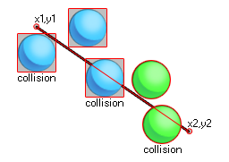

collision_line( x1, y1, x2, y2, obj, prec, notme );
| Argument | Description |
|---|---|
| x1 | The x coordinate of the start of the line. |
| y1 | The y coordinate of the start of the line. |
| x2 | The x coordinate of the end of the line. |
| y2 | The y coordinate of the end of the line. |
| obj | The object to check for instance collisions. |
| prec | Whether the check is based on pixel-perfect collisions (true = slow) or its bounding box in general (false = fast). |
| notme | Whether the calling instance, if relevant, should be excluded (true) or not (false). |
Returns: Instance id or noone
Collision line checks along a line from point x1,y1 to point x2,y2 for a collision with any instance of the object specified by the argument "obj". this check can be either precise or not, but for precise
collisions to be enabled, the object or instance that you are checking for must also have precise collisions enabled for their sprite. If not, the default check is based on bounding boxes. The following image
illustrates how this works:

Remember, for precise collisions to be considered both the object sprite and the collision function must have precise marked as on. It should also be noted that the return value of the function can be the
id of any one of the instances considered to be in collision along the line, so if three instance overlap the defined line, any one of their ids could be the return value of the function.
with (obj_Enemy)
{
if collision_line(100, 400, 100, 600, id, false, false) instance_destroy();
}
This code gets all instances of "obj_Enemy" to check along a line from 100x, 400y to 100x, 600y for a collision with themselves, and if there is one then they are destroyed.